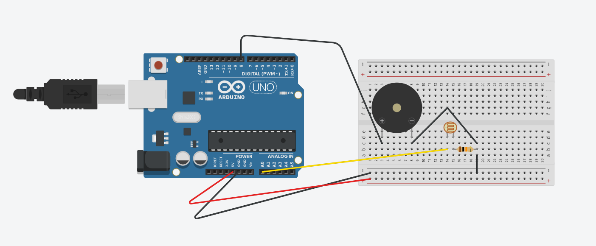

This week we got to build a noise machine that reacts to how much light it's getting - it was a super loud experiment! I found that getting the circuit to actually work took a bit of fiddling, double-checking, and troubleshooting. We had to test with different resistor values, which actually helped me deepen my understanding of electrical circuits.
It's also about learning best practices when it comes to wiring and breadboarding - length of wires, loose/tight connections, powering the circuit on/off when making adjustments, etc.

The sound it produced was sqeaky and electric, and we got to adjust the volumn through the arduino code to make it less tiring for our ears. Waving my hand over it felt less like playing an instrument and more like bothering a small insect. Which is really cute to think about.
I also found the light sensor an interesting component to work with - maybe it could be paired with music/color to produce a synesthetic performance?